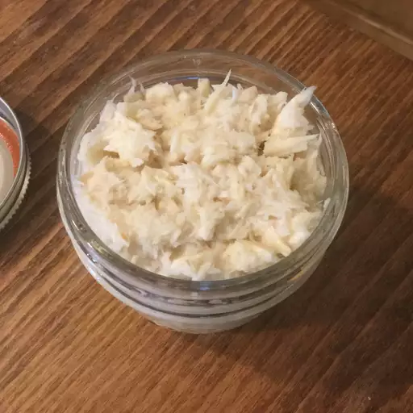

Homemade Horseradish

Wilma's Homemade Horseradish
This is a modern horseradish recipe that uses a food processor to make this fiery condiment. It tastes fresher and is much more pungent that store-bought.
Ingredients
- 1 cup peeled and cubed horseradish root
- 3/4 cup white vinegar
- 2 teaspoons white sugar
- 1/4 teaspoon salt
Steps
- Combine horseradish, vinegar, sugar, and salt in the bowl of a food processor or blender; pulse until blended. Carefully remove the cover of the processor or blender, keeping your face away from the container.
- Cover and store horseradish in the refridgerator for up to one month.